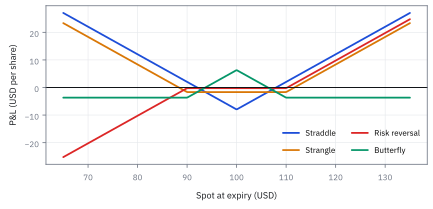

14.6 Volatility Trading Structures: the Desk Playbook
straddle, strangle, risk reversal, butterfly และ calendar คือ option หลายขาที่ประกอบให้เหลือเฉพาะความเสี่ยงที่อยากถือ แต่ละตัวซื้อขายส่วนต่างกันของผืนความผันผวน
หุ้นราคา \$100 ความผันผวน 20% ต่อปี ดอกเบี้ยศูนย์ คุณซื้อ straddle strike 100 อายุ 3 เดือน (call กับ put strike 100 อย่างละหนึ่ง) จำนวน 1,000 หน่วย เพื่อนบอกว่า “straddle ได้เงินเมื่อหุ้นขยับ ทางไหนก็ได้” ถ้าวันหมดอายุหุ้นจบที่ \$105 คุณได้หรือเสียเท่าไร และต้องจบนอกช่วงไหนจึงเริ่มได้กำไร?
ลองตอบก่อนเปิดเฉลย
เสีย \$2,975.52 straddle ราคา \$7.9755 ต่อหน่วย จบที่ \$105 ได้คืนแค่ \$5 ต่อหน่วย ต้องจบต่ำกว่า \$92.02 หรือสูงกว่า \$107.98 จึงเริ่มได้กำไร จบที่ \$115 ได้ \$7,024.48 ราคา \$7.98 ไม่ได้ตั้งขึ้นลอย ๆ มันเท่ากับขนาดการขยับเฉลี่ยของหุ้นตลอด 3 เดือนที่ความผันผวน 20% คือราว 0.8 เท่าของ SD \$10 straddle จึงได้กำไรเมื่อหุ้นขยับมากกว่าที่ราคาคิดไว้ ไม่ใช่แค่ขยับ
สิ่งที่เราจะสร้าง
option ตัวเดียวให้ความเสี่ยงหลายอย่างพร้อมกัน: ทิศทาง ความผันผวน และเวลา (14.3) โต๊ะจึงประกอบหลายขาเข้าด้วยกันให้เหลือเฉพาะสิ่งที่ต้องการ หน้านี้ใช้หุ้น \$100 ความผันผวนแบน 20% ดอกเบี้ยศูนย์ ไม่มีปันผล อายุแรก 0.25 ปีและอายุที่สอง 0.5 ปี ราคาทุกขามาจากสูตรของ 14.2
เริ่มจากราคา straddle ด้วยมือและเหตุผลว่าทำไมมันเท่ากับขนาดการขยับเฉลี่ย เขียนห้าโครงสร้างเป็นขาที่มีเครื่องหมาย แยก payoff ออกจากกำไร หาจุดคุ้มทุน ตีราคา calendar ที่วันหมดอายุของขาสั้น รวม Greeks ตามขา แล้วดูว่าแต่ละโครงสร้างได้เสียเท่าไรเมื่อผืนความผันผวนของ 14.5 ขยับแต่ละแบบ สุดท้ายคือ dispersion ซึ่งซื้อขาย correlation ระหว่างหุ้นในดัชนี
ศัพท์ที่ใช้ในหัวข้อนี้
- Straddle และ strangle
- straddle คือซื้อ call กับ put ที่ strike เดียวกัน strangle คือซื้อ put strike ต่ำกับ call strike สูง ทั้งสองได้เงินเมื่อหุ้นขยับไกลทางไหนก็ได้ strangle ถูกกว่าแต่ต้องขยับไกลกว่าจึงเริ่มจ่าย
- Risk reversal
- ซื้อ call strike สูงและขาย put strike ต่ำ (หรือกลับกัน) มีทิศทางชัด และราคาขึ้นกับว่า put ต่ำแพงกว่า call สูงแค่ไหน จึงเป็นเครื่องมือซื้อขาย skew ของ 14.4
- Butterfly
- ซื้อ call สอง strike ปีก และขาย call strike กลางสองใบ payoff เป็นกระโจมที่สูงสุดตรงกลาง จำกัดทั้งกำไรและขาดทุน ใช้เดิมพันว่าหุ้นจะจบใกล้ strike กลาง
- Calendar spread
- ขาย option อายุสั้นและซื้อ option strike เดียวกันอายุยาว ใช้ซื้อขายความต่างระหว่างอายุบนผืนความผันผวน สองขาหมดอายุคนละวัน จึงต้องตีราคาขายาวในวันที่ขาสั้นหมด
- Payoff, P&L และจุดคุ้มทุน
- payoff คือเงินที่สัญญาจ่ายวันหมดอายุ P&L คือ payoff ลบเงินที่จ่ายตอนเปิด จุดคุ้มทุนคือราคาหุ้นที่ทำให้ P&L เป็นศูนย์ payoff ของคนซื้อ option ไม่เคยติดลบ แต่ P&L ติดลบได้
- Dispersion และ implied correlation
- dispersion คือขายความผันผวนของดัชนีแล้วซื้อความผันผวนของหุ้นรายตัวในดัชนี กำไรเมื่อหุ้นเดินแยกกันมากกว่าที่ราคาคิด implied correlation คือค่า correlation ที่ทำให้ความผันผวนของดัชนีตรงกับของหุ้นรายตัว
สัญลักษณ์และหน่วย
| สัญลักษณ์ | ความหมาย | หน่วย |
|---|---|---|
| $S_0,\ S_T$ | ราคาหุ้นวันนี้ และวันหมดอายุ | USD |
| $C(K,T),\ P(K,T)$ | ราคา call และ put ที่ strike $K$ อายุ $T$ | USD ต่อหุ้น |
| $T_1,\ T_2$ | อายุ 0.25 และ 0.5 ปี | ปี |
| $n_i$ | จำนวนหน่วยของขาที่ $i$ ซื้อเป็นบวก ขายเป็นลบ | หน่วย |
| $H(S_T),\ V_0$ | payoff รวมของชุด และเงินสุทธิที่จ่ายตอนเปิด | USD ต่อหน่วย |
| $\Delta,\ \Gamma,\ \nu,\ \Theta$ | Greeks ของ 14.3 รวมตามขา | ตาม 14.3 |
| $w_i,\ \sigma_i,\ \rho$ | น้ำหนัก ความผันผวน และ correlation ของหุ้นในดัชนี | ไม่มีหน่วย, ต่อรากที่สองของปี, ไม่มีหน่วย |
| $\sigma_I$ | ความผันผวนของดัชนี | ต่อรากที่สองของปี |
ขั้นที่ 1 — ลองด้วยมือ: straddle ราคาเท่าไร และทำไม
โจทย์ให้อะไรมาบ้าง: $S_0=K=100$, $r=0$, $\sigma=0.20$, $T=0.25$ ใช้สูตรของ 14.2 เมื่อ $S_0=K$ และ $r=0$ ตัวเศษของ $d_1$ เหลือแค่ $\tfrac12\sigma^2T$ แล้วเทียบกับขนาดการขยับเฉลี่ย $S_0\sigma\sqrt T\,\mathbb E|Z|$
คำตอบ: straddle ราคา \$7.9755 ต่อหน่วย put เท่ากับ call พอดีเพราะ parity ของ 14.4 ที่ $r=0$ และ $S_0=K$ ให้ $C-P=0$ ส่วนบรรทัดสุดท้ายอธิบายตัวเลข: ที่ $r=0$ ราคา straddle คือค่าเฉลี่ยของ $|S_T-K|$ ภายใต้ $\mathbb Q$ และเมื่อ $\sigma\sqrt T$ เล็ก $S_T-S_0\approx S_0\sigma\sqrt T\,Z$ ค่าเฉลี่ยของขนาดการขยับจึงเป็น 0.8 เท่าของ SD \$10 ใกล้ 7.9755 มาก
ตรวจเองใน 10 วินาที: อินทิกรัล $\int_0^\infty z\phi(z)\,dz$ คือ $\big[-\phi(z)\big]_0^\infty=\phi(0)=0.3989$ สูตรในหัวของโต๊ะ “straddle ATM ≈ $0.8\,S\sigma\sqrt T$” มาจากบรรทัดนี้ ที่ 20% สามเดือนคือ $0.8(100)(0.2)(0.5)=8.0$
ขั้นที่ 2 — ห้าโครงสร้างเป็นขาที่มีเครื่องหมาย
ชื่อกลยุทธ์ไม่บอกเครื่องหมาย โต๊ะต่างกันอาจหมายถึงทิศตรงข้ามด้วยชื่อเดียวกัน ขั้นนี้นิยามแต่ละตัวเป็นขาที่มีจำนวนและเครื่องหมาย แล้วเขียน payoff วันหมดอายุ บรรทัดของ straddle ใช้สองกรณี: ถ้า $S_T\ge K$ call จ่าย $S_T-K$ put ไม่จ่าย ถ้า $S_T\lt K$ put จ่าย $K-S_T$ call ไม่จ่าย ทั้งสองกรณีคือ $|S_T-K|$
บรรทัดสุดท้ายอ่าน butterfly เป็น bull spread 90/100 ลบ bear spread 100/110 ก้อนแรกขึ้นจาก 0 ถึง 10 ระหว่าง 90 กับ 100 ก้อนหลังขึ้นจาก 0 ถึง 10 ระหว่าง 100 กับ 110 ลบกันจึงได้กระโจม: 0 ที่ 90, 10 ที่ 100, 0 ที่ 110 และ 0 นอกช่วง ตัวคูณ −2 ที่ strike 100 มาจากการที่มันถูกใช้ในทั้งสอง spread
| โครงสร้าง | ขา (อายุ 0.25 ปี ยกเว้นระบุ) | ราคาสุทธิต่อหน่วย (USD) |
|---|---|---|
| Straddle | $+P(100)+C(100)$ | $3.987761+3.987761=7.975522$ |
| Strangle | $+P(90)+C(110)$ | $0.712381+0.953947=1.666328$ |
| Risk reversal | $-P(90)+C(110)$ | $-0.712381+0.953947=0.241566$ |
| Butterfly | $+C(90)-2C(100)+C(110)$ | $10.712381-7.975522+0.953947=3.690806$ |
| Calendar | $-C(100,T_1)+C(100,T_2)$ | $-3.987761+5.637198=1.649437$ |
ขั้นที่ 3 — payoff ไม่ใช่กำไร: จุดคุ้มทุนของโครงสร้างอายุเดียว
โจทย์ให้อะไรมาบ้าง: payoff จากขั้นที่ 2 และราคาจากตาราง P&L ต่อหน่วยคือ $H(S_T)-V_0$ (ดอกเบี้ยศูนย์ จึงลบตรงได้) จุดคุ้มทุนคือ $H(S_T)=V_0$ ซึ่งสำหรับ straddle คือ $|S_T-100|=7.975522$ มีสองคำตอบ และคิด P&L ของ 1,000 หน่วยในโจทย์เปิดเรื่อง
คำตอบ: straddle ต้องจบนอก 92.02 ถึง 107.98 ช่องขาดทุนกว้าง $2V_0=15.95$ strangle ถูกกว่าเกือบห้าเท่าแต่ต้องจบนอก 88.33 ถึง 111.67 butterfly กำไรเฉพาะเมื่อจบระหว่าง 93.69 ถึง 106.31 และได้สูงสุด $10-3.6908=6.3092$ ที่ 100 ส่วน risk reversal จ่าย 0.2416 แล้วได้กำไรเมื่อจบเหนือ 110.24 แต่ขาดทุนไม่จำกัดขาลง เพราะขาย put ไว้
ตรวจเองใน 10 วินาที: butterfly 3.6908 หารด้วยระยะ strike ยกกำลังสอง $10^2$ ได้ 0.0369 ใกล้ density ของ $S_T$ ที่ 100 ภายใต้ $\mathbb Q$ คือ $\phi(-0.05)/(100\times0.1)=0.0398$ ตามขั้นที่ 6 ของ 14.5 (ห่าง 7% เพราะ 10 ยังไม่เล็กพอ)
Figure 14.6a — P&L วันหมดอายุของสี่โครงสร้างอายุเดียว

ขั้นที่ 4 — calendar: ตีราคาขายาวในวันที่ขาสั้นหมดอายุ
calendar ขาย call อายุ 0.25 ปีและซื้อ call อายุ 0.5 ปี strike เดียวกัน วันที่ขาสั้นหมดอายุ ขายาวยังเหลืออายุ 0.25 ปี จึงยังมีค่าเวลา ต้องตีราคามันด้วยสูตรของ 14.2 ที่ราคาหุ้นวันนั้น ไม่ใช่ใช้ payoff ของมัน บรรทัดแรกเป็นนิยามของมูลค่าในวันนั้น (ความผันผวนยัง 20%)
calendar ได้มากที่สุดเมื่อหุ้นอยู่ที่ strike ในวันที่ขาสั้นหมด: ขาสั้นหมดค่า ขายาวยังมีค่าเวลาเต็ม กำไร $3.9878-1.6494=2.3383$ ต่อหน่วย ถ้าหุ้นหนีไปไกลทางไหนก็ตาม ค่าเวลาของขายาวหาย และส่วนที่ขาสั้นต้องจ่ายหักกับส่วนในเงินของขายาว มูลค่าจึงเข้าหาศูนย์ จุดคุ้มทุนหาด้วยการแก้สมการบรรทัดสุดท้ายเชิงตัวเลข
ที่ \$110 ขายาวมีค่า 10.9539 คือเงินในตัว \$10 บวกค่าเวลา 0.9539 ขาสั้นจ่าย \$10 จึงเหลือแค่ค่าเวลา ที่ \$90 ขาสั้นไม่จ่าย แต่ขายาวอยู่นอกเงินและเหลือค่าเวลาแค่ 0.7124 ค่าเวลาของ option สูงสุดที่ strike และลดลงทั้งสองฝั่ง calendar จึงเป็นการถือค่าเวลาของขายาวไว้ขาย ณ วันที่ขาสั้นหมด
Figure 14.6b — มูลค่า calendar ในวันที่ขาสั้นหมดอายุ

ขั้นที่ 5 — Greeks ของชุดคือผลรวมของขาที่มีเครื่องหมาย
มูลค่าของชุดคือผลรวมถ่วงด้วยจำนวนหน่วย อนุพันธ์ของผลรวมคือผลรวมของอนุพันธ์ และจำนวนหน่วยเป็นค่าคงที่ที่เราเลือก Greeks ทุกตัวของ 14.3 จึงบวกกันตามขาได้ตรง ๆ เงื่อนไขเดียวคือทุกขาต้องคำนวณที่ราคาหุ้น เวลา และผืนความผันผวนชุดเดียวกัน
เหตุผลนี้ไม่ได้ใช้อะไรเกี่ยวกับ option เลย ใช้แค่ว่าการหาอนุพันธ์กระจายเข้าไปในผลบวกได้ ข้อควรระวังอยู่ที่เครื่องหมาย: ขาที่ขายมี $n_i$ ติดลบ butterfly จึงมี $n=-2$ ที่ strike 100 และ calendar มี $n=-1$ ที่ขาสั้น
ขั้นที่ 6 — Greeks ของ straddle ด้วยมือ แล้วครบห้าโครงสร้าง
โจทย์ให้อะไรมาบ้าง: สูตรของ 14.3 ที่ $S=100$, $r=0$, $d_1=0.05$, $\phi(0.05)=0.398444$ delta ของ put คือ delta ของ call ลบ 1 (หาอนุพันธ์ parity) ส่วน gamma และ vega ของ put เท่ากับของ call vega รายงานต่อความผันผวน 1 จุด theta ต่อวันปฏิทิน
คำตอบ: straddle ATM แทบไม่มีทิศ (delta 0.04) แต่มี gamma สองเท่าของ call ตัวเดียว ได้ \$0.40 ต่อความผันผวน 1 จุด และเสียค่าเวลา \$0.0437 ต่อวัน ตารางข้างล่างทำแบบเดียวกันครบทุกโครงสร้าง ต่อหน่วย ที่ $S=100$
| โครงสร้าง | delta | gamma (ต่อ \$) | vega (ต่อจุด) | theta (ต่อวัน) |
|---|---|---|---|---|
| Straddle | 0.0399 | 0.0797 | 0.3984 | −0.0437 |
| Strangle | 0.0484 | 0.0482 | 0.2412 | −0.0264 |
| Risk reversal | 0.3181 | 0.0048 | 0.0242 | −0.0026 |
| Butterfly | 0.0085 | −0.0315 | −0.1573 | +0.0172 |
| Calendar | 0.0082 | −0.0117 | +0.0822 | +0.0064 |
ตรวจเองใน 10 วินาที: “long butterfly” ที่ราคาหุ้นอยู่ตรงกลางมี gamma และ vega ติดลบ และได้ค่าเวลา เพราะขาย call ATM สองใบ ชื่อ long บอกแค่ว่าจ่ายเงินตอนเปิด ไม่ได้บอกว่า Greek ทุกตัวเป็นบวก calendar ก็เช่นกัน vega บวกแต่ gamma ลบ
Figure 14.6c — gamma ของแต่ละโครงสร้างเทียบราคาหุ้น

Figure 14.6d — vega สุทธิต่อความผันผวน 1 จุด ที่ราคาหุ้น \$100

ขั้นที่ 7 — แต่ละโครงสร้างซื้อส่วนไหนของผืนความผันผวน
โจทย์ให้อะไรมาบ้าง: คำนวณราคาใหม่ทั้งสูตรทุกขา ที่ราคาหุ้น \$100 ภายใต้การขยับของผืนสี่แบบ: (ก) ขนาน +1 จุดทุก strike ทุกอายุ (ข) skew ชันขึ้น: strike 90 +1 จุด strike 110 −1 จุด (ค) ปีกยกขึ้น: strike 90 และ 110 +1 จุด strike 100 เท่าเดิม (ง) เฉพาะอายุ 0.25 ปี +1 จุด และหุ้นขยับทันที ±\$5 ที่ความผันผวนเดิม หน่วยเป็น USD ต่อหน่วย
| โครงสร้าง | (ก) ขนาน | (ข) skew | (ค) ปีก | (ง) อายุสั้น | หุ้น +5 | หุ้น −5 |
|---|---|---|---|---|---|---|
| Straddle | +0.398 | 0 | 0 | +0.398 | +1.153 | +0.801 |
| Strangle | +0.247 | −0.018 | +0.247 | +0.247 | +0.834 | +0.371 |
| Risk reversal | +0.024 | −0.241 | +0.024 | +0.024 | +1.742 | −1.633 |
| Butterfly | −0.151 | −0.018 | +0.247 | −0.151 | −0.318 | −0.429 |
| Calendar | +0.082 | 0 | 0 | −0.199 | −0.095 | −0.184 |
คำตอบ: แต่ละแถวเผยว่าโครงสร้างนั้นซื้ออะไรจริง straddle ซื้อระดับความผันผวน ATM ล้วน ๆ strangle ซื้อระดับของปีก risk reversal แทบไม่สนระดับ แต่เสีย 0.241 เมื่อ skew ชันขึ้น จึงเป็นเครื่องมือขาย skew (พร้อมทิศทาง delta 0.32) butterfly ได้เมื่อปีกแพงขึ้นเทียบกับกลาง คือซื้อความโค้งของ smile และขายระดับ ATM ส่วน calendar ได้เมื่อทั้งผืนขึ้น แต่เสียเมื่ออายุสั้นขึ้นตัวเดียว คือซื้อ term structure
ตรวจเองใน 10 วินาที: คอลัมน์ขนานเกือบเท่า vega ในตารางขั้นที่ 6 (ต่างกันเล็กน้อยเพราะ vega เองเปลี่ยนเมื่อความผันผวนขยับ) คอลัมน์ skew ของ straddle เป็นศูนย์เพราะไม่มีขาที่ 90 หรือ 110 ส่วน straddle ได้ทั้งหุ้นขึ้นและลง แต่ขึ้นได้มากกว่าเพราะ delta +0.04
ขั้นที่ 8 — dispersion: variance ของดัชนีแยกเป็นส่วนเดี่ยวกับส่วนร่วม
ถ้าอยากซื้อขาย correlation ระหว่างหุ้นในดัชนี ต้องรู้ก่อนว่ามันอยู่ตรงไหนในความผันผวนของดัชนี ผลตอบแทนดัชนีคือผลรวมถ่วงน้ำหนักของหุ้น ใช้สูตร variance ของผลรวมเชิงเส้นของ 8.8 แล้วแยกคู่ที่เป็นตัวเดียวกันออกจากคู่ที่ต่างกัน ตัวอย่างใช้หุ้นสองตัวน้ำหนักเท่ากัน ความผันผวน 20% และ 30% correlation 0.4 (สมมติ)
บรรทัดที่สองมาจาก 8.8: variance ของผลรวมคือผลรวมของทุกคู่ $w_iw_j\operatorname{Cov}(r_i,r_j)$ คู่ $ij$ กับ $ji$ ให้ค่าเท่ากันจึงรวมเป็นสองเท่า และ covariance เขียนเป็น $\sigma_i\sigma_j\rho_{ij}$ ก้อนแรกเห็นได้จาก option ของหุ้นรายตัว ก้อนที่สองขึ้นกับ correlation อย่างเดียว
ดัชนีแกว่ง 21.10% ต่ำกว่าความผันผวนเฉลี่ยของหุ้น 25% ส่วนต่างคือการกระจายความเสี่ยง ถ้า $\rho=1$ ดัชนีจะแกว่ง 25% เต็ม ถ้า $\rho=0$ เหลือ 18.03%
ขั้นที่ 9 — dispersion ได้เงินเมื่อหุ้นเดินแยกกันมากกว่าที่ราคาคิด
โจทย์ให้อะไรมาบ้าง: ขาย variance ของดัชนีที่ระดับ 0.0445 (correlation 0.4) notional \$1,000,000 ต่อ variance 1.00 และซื้อ variance ของหุ้นรายตัวในขนาดที่หักกับส่วนเดี่ยวพอดี (variance swap ของ 14.8) ถ้าหุ้นแต่ละตัวแกว่งเท่าที่ราคาคิดไว้ แต่ correlation ที่เกิดจริงคือ 0.2 ได้เสียเท่าไร และถ้าตลาดขาย option ดัชนีที่ 22% correlation ที่ราคาบอกคือเท่าไร
คำตอบ: ส่วนเดี่ยว 0.0325 ไม่เปลี่ยน ขาหุ้นรายตัวจึงเสมอตัว ส่วนร่วมลดจาก 0.012 เหลือ 0.006 variance ของดัชนีจึงลด 0.006 คนที่ขายไว้ได้ \$6,000 เงินทั้งก้อนมาจาก correlation ไม่ใช่จากความผันผวนของหุ้นรายตัว ถ้าดัชนีซื้อขายที่ 22% ราคากำลังบอกว่า correlation เฉลี่ยคือ 0.53 ใครเชื่อว่าหุ้นจะเดินแยกกันมากกว่านั้นก็ทำ dispersion
ตรวจเองใน 10 วินาที: P&L เป็นเส้นตรงใน $\rho$ ด้วยความชัน 0.03 ต่อ correlation 1.00 correlation ลด 0.2 ได้ $0.2(0.03)(1{,}000{,}000)=\$6{,}000$ แต่ในวันตลาดตื่นตระหนก correlation มักพุ่งพร้อมกับความผันผวนของหุ้นรายตัว ตัวเลขนี้จึงเป็นแค่กรณีที่แยกผลของ correlation ออกมาให้เห็น
Figure 14.6e — variance ของดัชนีเป็นเส้นตรงใน correlation

คำถามที่ควรถามออกมาดัง ๆ
ถ้า straddle ราคาเท่ากับขนาดการขยับเฉลี่ย ใครได้เงิน? ขั้นที่ 1 คิดขนาดการขยับด้วยความผันผวน 20% ที่อยู่ในราคา ถ้าหุ้นแกว่งจริงมากกว่า 20% ผู้ซื้อได้ ถ้าน้อยกว่าผู้ขายได้ straddle จึงเป็นการเดิมพันความผันผวนที่เกิดจริงเทียบกับ implied แบบเดียวกับจุดเท่าทุนรายวันของ 14.3
ทำไมไม่ซื้อ call ตัวเดียวถ้าเชื่อว่าความผันผวนจะขึ้น? call มี delta 0.5 ความผันผวนขึ้นแต่หุ้นลงก็อาจขาดทุน straddle ตัดทิศทางออกเกือบหมด (delta 0.04) และถ้า hedge delta ที่เหลือด้วยหุ้น จะเหลือแทบแต่ความผันผวน
ทำไมโต๊ะชอบ strangle กับ risk reversal ที่ strike ห่างเท่า ๆ กัน? เพราะตลาดเสนอราคาเป็นชุดมาตรฐาน strangle วัดระดับปีก risk reversal วัดความเอียง สองตัวนี้พร้อม straddle ATM บอกรูปร่างของ smile ได้ครบสามส่วน: ระดับ ความเอียง และความโค้ง
ความผิดที่ให้ตัวเลขผิดโดยไม่มีอะไรเตือน
อ่าน payoff เป็นกำไร: กราฟ payoff ของ straddle ไม่เคยติดลบ แต่ที่ \$105 เสีย \$2,975.52 ต่อ 1,000 หน่วย จุดที่ P&L ตัดศูนย์ไม่ใช่ strike เสมอ
พิมพ์อัตราส่วนผิด: butterfly ที่ขาย call 100 แค่ใบเดียว $C(90)-C(100)+C(110)$ ราคา 7.6786 และจ่าย 0, 10, 10 และ 30 ที่ \$80, \$100, \$110 และ \$130 คือ bull spread บวก call ที่ได้ไม่จำกัด ไม่ใช่กระโจมที่จำกัดความเสี่ยงอีกต่อไป
ตีราคา calendar ด้วย payoff ของสองวัน: ลบ payoff ของขาสั้นกับขายาวบนเส้นทางเดียวกันเหมือนหมดอายุวันเดียวกันไม่ได้ ในวันที่ขาสั้นหมด ขายาวยังมีค่าเวลาถึง 3.99 ที่ strike (ขั้นที่ 4)
ลืมต้นทุนของหลายขา: butterfly มีสี่หน่วย option ถ้าแต่ละหน่วยห่างราคากลาง \$0.05 (สมมติ) เปิดและปิดครบหนึ่งรอบเสีย $8(0.05)=\$0.40$ ต่อหน่วย หรือ 11% ของราคา 3.69 ก่อนเริ่มได้อะไร
ใช้ทำอะไรบนโต๊ะจริง
โต๊ะแปลงมุมมองเป็นโครงสร้างด้วยตารางแบบขั้นที่ 7: คิดว่าความผันผวน ATM ถูกเกินไปก็ซื้อ straddle แล้ว hedge delta คิดว่า put ที่ strike ต่ำแพงเกินไปเมื่อเทียบกับ call ที่ strike สูงก็ขาย skew ด้วย risk reversal แล้ว hedge delta 0.32 คิดว่าช่วงก่อนประกาศงบ อายุสั้นแพงเกินไปก็ขายอายุสั้นซื้ออายุยาวด้วย calendar และคิดว่า correlation ที่ราคาบอกสูงเกินไปก็ทำ dispersion
ทุกโครงสร้างต้องบันทึกเป็นขาที่มีเครื่องหมาย strike อายุ ประเภท จำนวน และตัวคูณ แล้วรายงาน Greeks และตาราง scenario ของทั้งชุด ไม่ใช่รายงานแค่ชื่อ เพราะชื่อเดียวกันมีความเสี่ยงต่างกันตามราคาหุ้นและเวลา (Figure 14.6c)
สามโจทย์ตรวจความเข้าใจ
1. ขาย strangle 90/110 จำนวน 1,000 หน่วย ได้เงินเท่าไร จุดคุ้มทุนอยู่ไหน และถ้าหุ้นจบที่ \$80 ได้เสียเท่าไร?
เฉลย
รับ $1{,}000(1.666328)=\$1{,}666.33$ จุดคุ้มทุน $90-1.666328=88.33$ และ $110+1.666328=111.67$ ที่ \$80 put 90 จ่าย 10 ต่อหน่วย P&L $=1{,}000(1.666328-10)=-\$8{,}333.67$ ผู้ขาย strangle ได้เงินน้อยแน่นอน แลกกับขาดทุนที่ไม่มีเพดานฝั่งขาขึ้น
2. ใช้ตารางในขั้นที่ 7: ถ้าคิดว่า skew จะชันขึ้น 1 จุดแต่ไม่อยากถือทิศทาง ต้องทำอะไร ได้เท่าไรต่อหน่วย และต้อง hedge หุ้นกี่หุ้น?
เฉลย
ทำ risk reversal กลับด้าน: ซื้อ put 90 ขาย call 110 ได้ +0.241 ต่อหน่วยเมื่อ skew ชันขึ้นตามโจทย์ ชุดนี้มี delta −0.3181 จึงซื้อหุ้น 0.3181 หุ้นต่อหน่วย (318 หุ้นต่อ 1,000 หน่วย) ให้ delta รวมเป็นศูนย์ แล้วต้องปรับ hedge เมื่อราคาหุ้นเปลี่ยน
3. ดัชนีสองหุ้นน้ำหนักเท่ากัน ความผันผวน 25% ทั้งคู่ correlation 0.5 ดัชนีแกว่งเท่าไร?
เฉลย
ส่วนเดี่ยว $2(0.25)(0.0625)=0.03125$ ส่วนร่วม $2(0.25)(0.0625)(0.5)=0.015625$ รวม 0.046875 ความผันผวน $\sqrt{0.046875}=21.65\%$ ต่ำกว่า 25% ของหุ้นแต่ละตัว เพราะ correlation ไม่ถึง 1
คำนวณซ้ำด้วย JavaScript
รันใน Node.js ได้โดยไม่ติดตั้งแพ็กเกจ โค้ดนี้ตรวจขาของแต่ละโครงสร้าง ตั้งราคาทุกขาด้วยสูตรของ 14.2 หาจุดคุ้มทุนและมูลค่า calendar รวม Greeks ตามขา คำนวณตาราง scenario ด้วยการตั้งราคาใหม่ทั้งสูตร และตัวเลข dispersion แล้วพิมพ์ทุกตัวเลขเป็น JSON บรรทัดเดียว
// Multi-leg option structures: prices, breakevens, Greeks by legs, surface scenarios and dispersion.
// Local names for the Math functions: shorter to read, and fast in any sandbox.
const { abs, exp, log, sqrt, max, PI } = Math;
const phi = x => exp(-0.5 * x * x) / sqrt(2 * PI);
// Normal CDF: Taylor series near the centre, continued fraction in the tails.
function Phi(x) {
const a = abs(x);
if (a <= 3) {
let term = a, sum = a;
for (let n = 1; n < 200 && term > 1e-17 * sum; n++) { term *= a * a / (2 * n + 1); sum += term; }
return x >= 0 ? 0.5 + phi(a) * sum : 0.5 - phi(a) * sum;
}
let f = a;
for (let k = 120; k >= 1; k--) f = a + k / f;
return x >= 0 ? 1 - phi(a) / f : phi(a) / f;
}
// One option per share, r = 0 and no dividends as on this page. Theta per calendar day, vega per vol point.
function option(type, S, K, T, sigma) {
if (type !== 'call' && type !== 'put') throw new TypeError("Option type must be 'call' or 'put'");
if (![S, K, T, sigma].every(x => Number.isFinite(x) && x > 0)) throw new RangeError('Spot, strike, time and volatility must be positive numbers');
const sT = sigma * sqrt(T), d1 = (log(S / K) + sT * sT / 2) / sT, d2 = d1 - sT, call = type === 'call';
return {price: call ? S * Phi(d1) - K * Phi(d2) : K * Phi(-d2) - S * Phi(-d1), delta: call ? Phi(d1) : Phi(d1) - 1,
gamma: phi(d1) / (S * sT), vega: 0.01 * S * phi(d1) * sqrt(T), theta: -S * phi(d1) * sigma / (2 * sqrt(T)) / 365};
}
// A structure is a list of signed legs [units, type, strike, years]; volOf lets each strike and expiry have its own vol.
function value(legs, S, volOf = () => 0.2) {
if (!Array.isArray(legs) || legs.length === 0) throw new RangeError('A structure needs at least one leg');
const out = {price: 0, delta: 0, gamma: 0, vega: 0, theta: 0};
for (const [n, type, K, T] of legs) {
if (!Number.isFinite(n) || n === 0) throw new RangeError('Each leg needs a non-zero number of units');
const o = option(type, S, K, T, volOf(K, T));
for (const key of Object.keys(out)) out[key] += n * o[key];
}
return out;
}
const T1 = 0.25, T2 = 0.5;
const sets = {
straddle: [[1, 'put', 100, T1], [1, 'call', 100, T1]], strangle: [[1, 'put', 90, T1], [1, 'call', 110, T1]],
riskReversal: [[-1, 'put', 90, T1], [1, 'call', 110, T1]], butterfly: [[1, 'call', 90, T1], [-2, 'call', 100, T1], [1, 'call', 110, T1]],
calendar: [[-1, 'call', 100, T1], [1, 'call', 100, T2]]
};
// Bisection for a breakeven: f must change sign on [lo, hi].
function root(f, lo, hi) {
if (f(lo) * f(hi) > 0) throw new RangeError('No sign change: the interval does not bracket a breakeven');
for (let i = 0; i < 200; i++) { const m = (lo + hi) / 2; if (f(lo) * f(m) <= 0) hi = m; else lo = m; }
return (lo + hi) / 2;
}
const at100 = Object.fromEntries(Object.entries(sets).map(([k, legs]) => [k, value(legs, 100)]));
const V0 = k => at100[k].price;
const calendarAt = S => option('call', S, 100, 0.25, 0.2).price - max(S - 100, 0);
const scenarios = {parallel: () => 0.21, skew: K => 0.2 + (K === 90 ? 0.01 : K === 110 ? -0.01 : 0),
wings: K => (K === 100 ? 0.2 : 0.21), front: (K, T) => (T === T1 ? 0.21 : 0.2)};
const table = Object.fromEntries(Object.entries(sets).map(([k, legs]) => [k, {
...Object.fromEntries(Object.entries(scenarios).map(([s, f]) => [s, value(legs, 100, f).price - V0(k)])),
up5: value(legs, 105).price - V0(k), down5: value(legs, 95).price - V0(k)}]));
function indexVariance(w, sigma, rho) {
if (!(rho >= -1 && rho <= 1)) throw new RangeError('Correlation must lie between -1 and 1');
return w[0] ** 2 * sigma[0] ** 2 + w[1] ** 2 * sigma[1] ** 2 + 2 * w[0] * w[1] * sigma[0] * sigma[1] * rho;
}
const own = indexVariance([0.5, 0.5], [0.2, 0.3], 0);
console.log(JSON.stringify({
legs: {C100: option('call', 100, 100, T1, 0.2).price, P90: option('put', 100, 90, T1, 0.2).price, C110: option('call', 100, 110, T1, 0.2).price,
C90: option('call', 100, 90, T1, 0.2).price, C100long: option('call', 100, 100, T2, 0.2).price},
at100, meanMove: 100 * 0.2 * sqrt(T1) * sqrt(2 / PI),
pnl1000: [105, 115].map(x => 1000 * (abs(x - 100) - V0('straddle'))),
breakevens: {straddle: [100 - V0('straddle'), 100 + V0('straddle')], strangle: [90 - V0('strangle'), 110 + V0('strangle')],
butterfly: [90 + V0('butterfly'), 110 - V0('butterfly')], riskReversal: 110 + V0('riskReversal'),
calendar: [root(S => calendarAt(S) - V0('calendar'), 70, 100), root(S => calendarAt(S) - V0('calendar'), 100, 140)]},
calendarAt: [80, 90, 100, 110, 120].map(S => [S, calendarAt(S)]), flyOverH2: V0('butterfly') / 100, densityAt100: phi(-0.05) / (100 * 0.1),
table,
dispersion: {own, at04: indexVariance([0.5, 0.5], [0.2, 0.3], 0.4), at02: indexVariance([0.5, 0.5], [0.2, 0.3], 0.2),
pnl: 1e6 * (indexVariance([0.5, 0.5], [0.2, 0.3], 0.4) - indexVariance([0.5, 0.5], [0.2, 0.3], 0.2)),
impliedRho: (0.22 ** 2 - own) / (indexVariance([0.5, 0.5], [0.2, 0.3], 1) - own), rho0: sqrt(own), rho1: sqrt(indexVariance([0.5, 0.5], [0.2, 0.3], 1))},
exercises: {shortStrangle80: 1000 * (V0('strangle') - 10), wrongRatio: value([[1, 'call', 90, T1], [-1, 'call', 100, T1], [1, 'call', 110, T1]], 100).price,
wrongRatioPayoff: [80, 100, 110, 130].map(x => max(x - 90, 0) - max(x - 100, 0) + max(x - 110, 0)),
equalVols: sqrt(indexVariance([0.5, 0.5], [0.25, 0.25], 0.5))}
}));ข้อจำกัด: หน้านี้สมมติอะไร และของจริงเป็นอย่างไร
| เรื่อง | หน้านี้สมมติว่า | ของจริง | ผลเวลาใช้งาน |
|---|---|---|---|
| ความผันผวน | แบน 20% ทุก strike ทุกอายุ | มี smile และ term structure (14.4 และ 14.5) | ราคาแต่ละขาต้องใช้ความผันผวนของ strike และอายุนั้น ตารางในขั้นที่ 7 จึงสำคัญกว่าตัวเลขที่ผืนแบน |
| การถือถึงวันหมดอายุ | กราฟ payoff คือผลลัพธ์ | ส่วนใหญ่ปิดก่อน | ผลจริงขึ้นกับราคาและผืนความผันผวนระหว่างทาง ต้องดู Greeks และ scenario |
| ต้นทุน | ซื้อขายที่ราคากลาง | ทุกขาข้าม bid–ask ทั้งตอนเปิดและปิด | ชุดสี่ขาเสียส่วนต่างแปดครั้ง กินกำไรที่คาดไว้มาก |
| dispersion | น้ำหนักและความผันผวนหุ้นคงที่ | ขยับพร้อม correlation โดยเฉพาะวันตลาดตื่นตระหนก | P&L ไม่ใช่เส้นตรงใน correlation และมีความเสี่ยงจากหุ้นตัวที่กระโดด |
สิ่งที่ควรตอบได้หลังอ่าน
- straddle ATM ราคาเท่าขนาดการขยับเฉลี่ย $S\sigma\sqrt T\sqrt{2/\pi}\approx0.8\,S\sigma\sqrt T$: \$7.98 ที่ 20% สามเดือน ได้กำไรเมื่อหุ้นขยับมากกว่าที่ราคาคิดไว้ ไม่ใช่แค่ขยับ
- payoff ไม่ใช่ P&L: straddle ต้องจบนอก 92.02 ถึง 107.98 ที่ \$105 ยังเสีย \$2,975.52 ต่อ 1,000 หน่วย
- calendar ต้องตีราคาขายาวในวันที่ขาสั้นหมด: ได้มากที่สุด 2.34 ที่ strike และขาดทุนเมื่อหุ้นหนีไปนอก 94.22 ถึง 106.53
- Greeks บวกตามขาที่มีเครื่องหมาย ชื่อ long ไม่ได้แปลว่าทุกตัวบวก: long butterfly มี gamma และ vega ติดลบที่กลาง
- straddle ซื้อระดับ ATM strangle ซื้อปีก risk reversal ซื้อขาย skew butterfly ซื้อความโค้ง calendar ซื้อ term structure และ dispersion ซื้อขาย correlation (\$6,000 ต่อ \$1 ล้าน notional เมื่อ correlation ลดจาก 0.4 เป็น 0.2)
ทุกโครงสร้างในหน้านี้ใช้ความผันผวนแบน 20% แต่ตารางในขั้นที่ 7 แสดงว่ากำไรมาจากการที่ผืนขยับ 14.7 จะให้ความผันผวนเองเป็นตัวแปรสุ่ม แล้วดูว่า smile และ term structure เกิดขึ้นเองได้อย่างไร